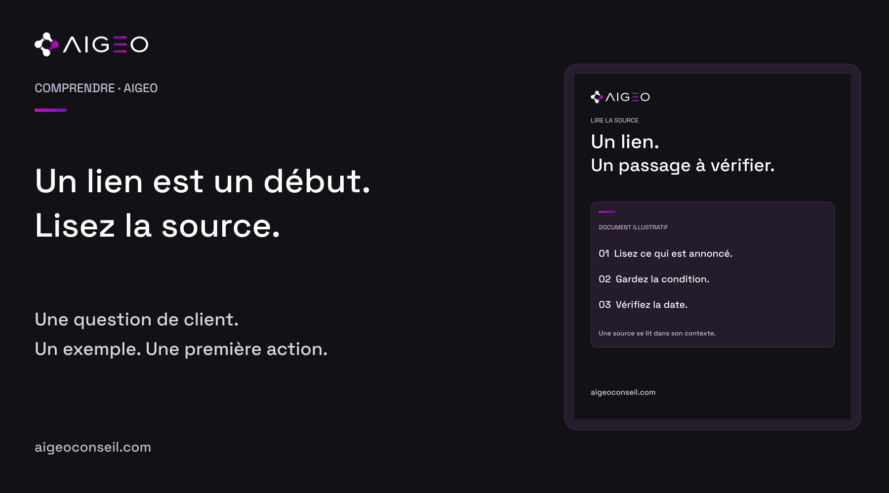
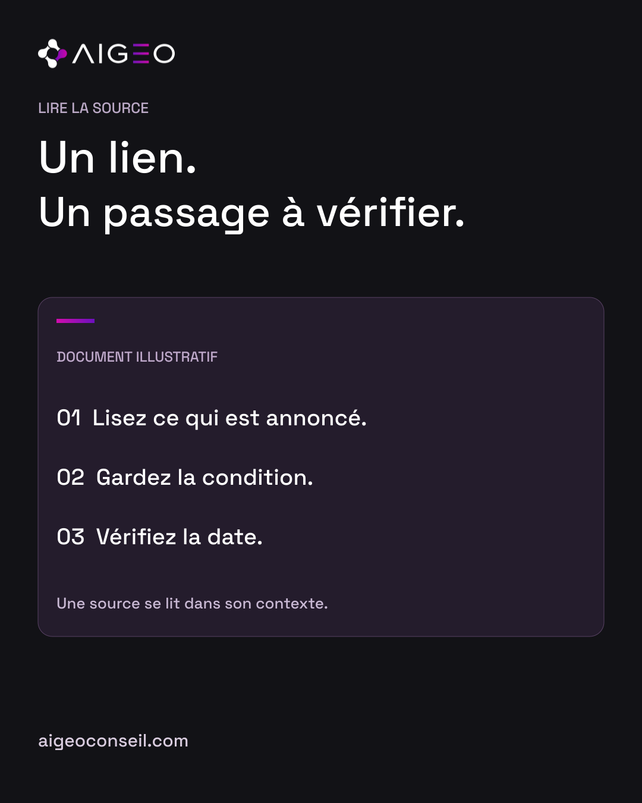

Un lien est un point de départ
Une réponse IA peut afficher une phrase et un lien vers une page. Ce lien est utile pour consulter la source, mais il faut encore la lire. Son titre peut parler du bon sujet sans confirmer le détail qui vous intéresse. Chez AIGEO, nous cherchons le passage précis qui soutient l’information étudiée. Cette lecture concerne les faits visibles dans les documents. Nous ne prétendons pas expliquer le raisonnement interne de l’outil. Le premier geste consiste simplement à ouvrir la page avant de reprendre son information dans un contenu.
Chercher la bonne phrase
Imaginons une source fictive sur un service d’accompagnement. Le titre annonce une offre complète. Dans le texte, une partie de cette offre est disponible uniquement pour certains projets. Si vous ne gardez que le titre, vous pouvez perdre cette condition. Nous cherchons donc ce qui est effectivement annoncé et dans quelles limites. Cette méthode s’applique aussi à vos propres pages. Une condition placée loin du service principal peut être difficile à comprendre pour un client. Elle mérite une lecture attentive, pas une reformulation plus généreuse.
Regarder le contexte
Un passage se comprend avec les phrases qui l’entourent. S’agit-il d’un exemple, d’une possibilité ou d’un fonctionnement déjà disponible ? Concerne-t-il un pays, un compte ou un type d’usage particulier ? Ces précisions changent ce que nous pouvons écrire. Nous préférons conserver une limite importante dans une phrase simple plutôt que produire une accroche plus forte et inexacte. Un exemple fictif reste signalé comme tel. Un document technique n’est pas non plus une preuve d’un résultat obtenu pour une entreprise ou d’un bénéfice commercial.

Vérifier la date utile
La date visible sur une page peut correspondre à sa publication ou à une mise à jour. Le fait décrit peut être plus ancien. Quand le sujet dépend d’une annonce ou d’un changement de service, nous vérifions ces deux repères. Nous regardons aussi si la documentation décrit un accès actuel ou une étape annoncée. Si la date reste inconnue, nous la conservons comme inconnue. Une page récemment mise à jour ne transforme pas automatiquement tous ses exemples en nouveautés et ne suffit pas à confirmer une disponibilité générale.
Faire une note courte
Après la lecture, notez le lien, le passage utile et ce qu’il permet réellement d’affirmer. Vous pouvez ajouter la date de consultation et les conditions importantes. Cette trace aide à reprendre le sujet sans recommencer toute la recherche. Pour une annonce de plateforme, privilégiez sa documentation ou sa communication officielle quand elle est disponible. Si plusieurs documents se contredisent, ne choisissez pas uniquement celui qui donne le message le plus favorable. Retrouvez leur périmètre et leur date avant de décider ce qui peut être repris dans votre contenu.
Une habitude pour vos prochains contenus
Avant de publier une information, ouvrez la source, lisez le passage utile et gardez sa condition principale. Le lecteur n’a pas besoin d’un long compte rendu de recherche. Il a besoin d’une phrase compréhensible et exacte, avec un lien pour aller plus loin. Chez AIGEO, nous utilisons cette discipline pour distinguer ce qui est documenté de notre méthode et de nos exemples. Découvrez notre approche sur aigeoconseil.com. Un lien est pratique ; la lecture de la source reste le geste qui permet de savoir ce qu’il soutient réellement.
Sources consultées
- OpenAI — Searching the web with ChatGPT · vérifiée le 2026-10-10T21:18:23.401073+00:00
- Google Search Central — AI features and your website · vérifiée le 2026-10-10T21:18:23.401073+00:00